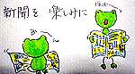
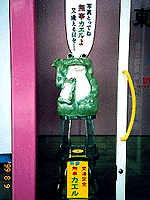
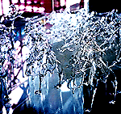
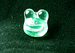
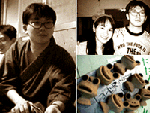

北海道にカエルワイン！、同志特派員が「カエルのきもち展」報告 【千葉発=くぼカエル同志特派員】千葉中央博物館での「カエルのきもち」展に行ってきました。私の感想は、次の通りです。【全国かえる奉賛会】かえる新聞を愛読する挿し絵付きの手紙をありがとーっ！！大王様も、「カエルのきもち展」には、行きたかったぞー。 出口はカエルで！記念撮影無事カエル！ 【仙台発=かえるの蓮様】お送りした写真は奥州藤原氏で有名な岩手県平泉近辺の厳美景と言うところにあるガラス工芸館で撮影しました。平泉の金色堂から車で２０分ほど行ったところにあります。ちょっとよく分からないかもしれませんが、最初の４点がかえるのオーケストラの写真です。指揮者もいました。  その店の入り口には、カエルがいました。自分で「写真とってね」と主張しているのがなかなかいかしてます。お店の入り口はかえるばかりでした。
【全国かえる奉賛会】ガラスのカエルオーケストラは、素晴らしいぞ。残念なことに、透明のガラス製のカエルオーケストラを撮影するのは、とっても難しいのである。
ケロ天市場を開設！モロー君製造工場に潜入！ 【東京発=モロー寺井同志記者】モロー君の携帯ストラップを造っています。いやー、何回失敗したやら。。今回の分譲に際しては、透明タイプと金属タイプの２種類造っています。透明タイプは、表面仕上げも気を使うし 手間かかりますね。なお、生産工場の潜入ルポもあるので、見て下さい。次回の分譲開始は、９月中旬ごろです。開設したばかりのケロテン市場に出荷します。 幼少よりカエル飼育！母様が明かすモロー誕生秘話！ 【福岡発=NIKOちゃん大王と呼ばれているモローの母同志記者】伊勢神宮の（確か、多分）かえるのキーホルダーを貰ったのが、我が家のかえるグッズの最初。その前に、我が家のガキ二人が当時居た社宅マンション敷地内の赤土から、小さな可愛い青蛙を山ほど捕まえて来て、瓶に飼育。それを手伝った母なる私ダケがナントカウイールスに感染、目が真っ赤になって痛んで、眼科に走ったオソロシイ記憶があります。そのガキンチョの大きい方=写真=が、２０数年後にモロー君なる物体を製作するようになるとは、思ってもいませんでした。
【全国かえる奉賛会】いやあああ。モロー師の母様から生メッセージをいただけるなんて、思ってもみなかったぞ。幼少の頃より、カエルに目覚めていたことが、母様の証言であきらかになったのである。子供の頃から、カエルに免疫を持っていたモロー寺井師！
カエルの陶芸作品WWW講座、カエル陶芸作品展も！【神奈川発=正勝様】カエルの陶芸作品と初心者のためのWWW講座を発見しました。ここで、紹介されていたカエル達を鎌倉まで見に行ってきました。鎌倉のライトハウスギャラリーでの展示は先日までで終了ですが11月13〜14日に東京ビッグサイトで開催されるデザインフェスタで再び陶器のカエル達を拝む機会があるそうです。ちなみにカエルの陶器の作者は典子さんという方だそうです。 投稿採用者に武功徽章を授与！ |
かえる古新聞過去に取り上げた記事を見出し付きで一覧したい人は、ここをクリック◆創刊号を見る◆先週号を見る◆話題の号を見る◆かえる新聞の昔を読む
|
私も入っています。。全国かえる奉賛会
大王様に会うには、このバナーをクリック。ずっと奥に写真館があるぞ。全国かえる奉賛会に入会するには、自分のホームページのどこかに、下の部分を追加するとバナーがリンク付きで表示されるぞ。どんどん入会しましょー |


|